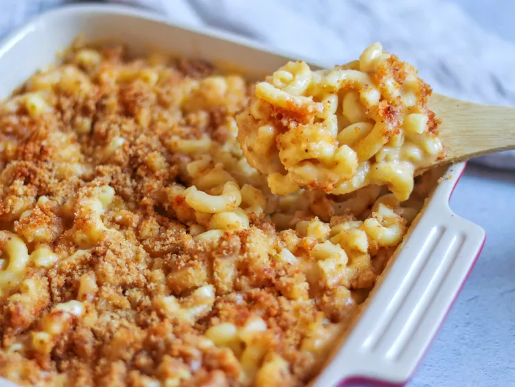

Mac and Cheese

Homemade Mac and cheese
A quick and easy recipe for this classic dish, topped with breadcrumbs. Super tasty.
Ingredients
Macaroni and Cheese
- 225g macaroni
- 60g butter
- 45g flour
- 620ml milk
- 240g shredded mature Cheddar cheese
- 45g grated Parmesan cheese
- salt and pepper to taste
Bread Crumb Topping
- 28g butter
- 75g dry breadcrumbs
- 1 pinch ground paprika
Steps
- Gather all ingredients. Preheat the oven to 175 degrees C. Grease an 8-inch
square baking dish.
- To make the macaroni and cheese: Bring a large pot of lightly salted water
to a boil. Add macaroni and simmer, stirring occasionally, until tender yet
firm to the bite, about 8 minutes; it will finish cooking in the oven. Drain
and transfer to the prepared baking dish.
- While the macaroni is cooking, melt the butter in a medium skillet over
low heat. Whisk in flour and stir until the mixture becomes paste-like and light
golden brown, 3 to 5 minutes.
- Gradually whisk the milk into the flour mixture, and bring to a simmer.
- Stir in shredded Cheddar and finely grated Parmesan cheeses; season with
salt and pepper. Cook and stir over low heat until cheese is melted and sauce
has thickened, 3 to 5 minutes, adding up to 120ml more milk if needed.
- Pour cheese sauce over macaroni and stir until well combined.
- Make the bread crumb topping: Melt the butter in a skillet over medium heat.
Add bread crumbs; cook and stir until well coated and browned.
- Spread bread crumbs over macaroni and cheese, then sprinkle with paprika.
- Bake in the preheated oven until topping is golden brown and macaroni and
cheese is bubbling, about 30 minutes.
- Enjoy!